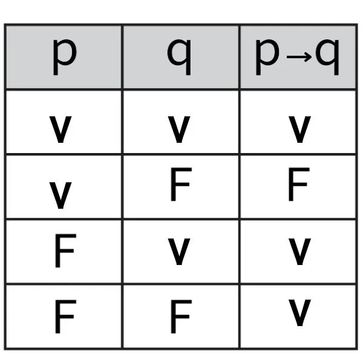
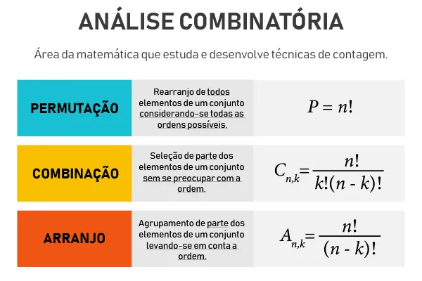
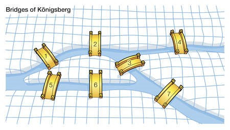

Professor: Willian Guimaraes Borges
A tabela-verdade é uma ferramenta usada na lógica proposicional para mostrar todas as combinações possíveis de valores de verdade (verdadeiro ou falso) para uma expressão lógica.
Ela é especialmente útil para analisar proposições compostas e determinar sua validade. Com a tabela-verdade podemos:
Uma tabela-verdade completa lista todas as possíveis combinações de valores verdade para as proposições simples e o resultado da proposição composta.
Teoria dos Conjuntos é um ramo da matemática que estuda conjuntos, que são coleções de objetos bem definidos, chamados elementos.
Ela fornece a base para grande parte da matemática moderna. Os principais conceitos:
A teoria dos conjuntos é fundamental para lógica, álgebra, análise e outras áreas da matemática.
Análise Combinatória é o ramo da matemática que estuda as diferentes maneiras de contar, agrupar e organizar elementos de um conjunto, sem repeti-los ou considerando diferentes critérios.
Principais conceitos:
É usada para resolver problemas de contagem, probabilidade e organização de dados.
Teoria dos Grafos é o ramo da matemática que estuda estruturas formadas por objetos chamados vértices (ou nós) conectados por arestas (ou ligações). Ela é usada para modelar relações e conexões em redes, como mapas, redes sociais, circuitos e sistemas de transporte.
Principais conceitos:
A Teoria dos Grafos é fundamental em ciência da computação, engenharia, logística e outras áreas.
